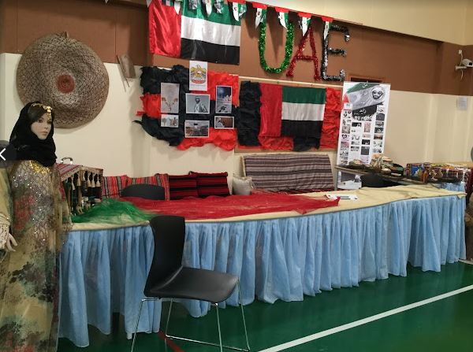

School Event Hallway: National Day(UAE)
Is where most events are held.
The P.E hallway is where the students( mostly year 7 and above), have their physical education there, and where the most
graduations are held, also events like in the picture, national day, disco, international day, and even acts are held there!